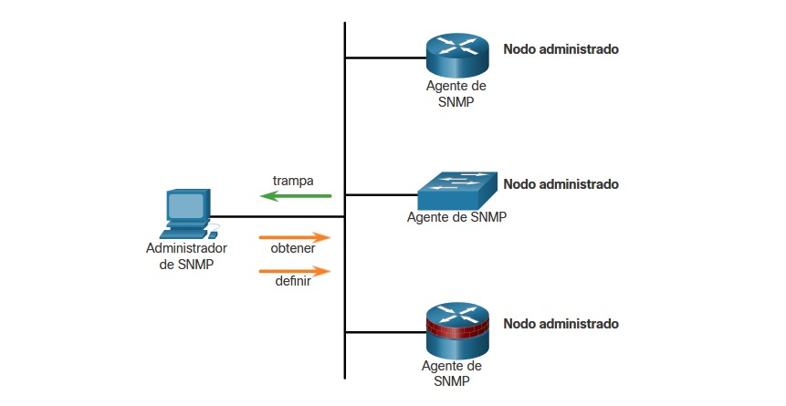
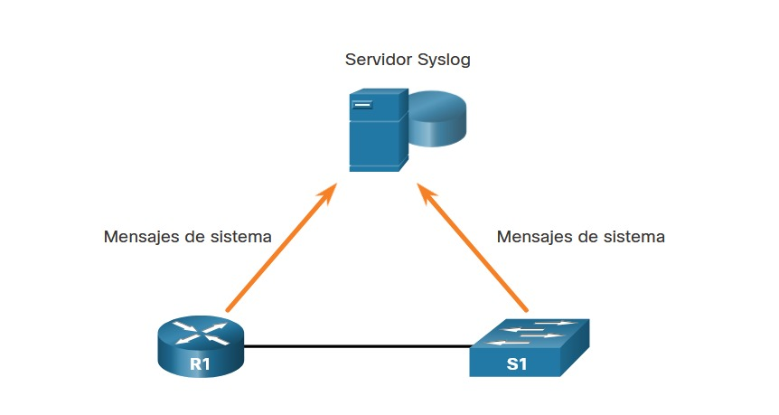

12.3.1 Video - Servicios de seguridad
Vea el vídeo para obtener más información sobre los servicios de seguridad.
12.3.2 Control de tráfico con ACL
Una lista de control de acceso (ACL, Access Control List) es una serie de comandos que controla si un dispositivo reenvía o descarta paquetes según la información que se encuentra en el encabezado del paquete. Cuando se las configura, las ACL realizan las siguientes tareas:
Además de permitir o denegar tráfico, las ACL se pueden utilizar para seleccionar tipos de tráfico para analizar, reenviar o procesar de otras formas. Por ejemplo, se pueden utilizar ACL para clasificar el tráfico a fin de permitir el procesamiento por prioridad. Esta capacidad es similar a tener un pase vip para un concierto o un evento deportivo. El pase vip brinda a ciertos invitados privilegios que no se ofrecen a los asistentes que poseen entradas de admisión general, como prioridad de entrada o el ingreso a un área restringida.
En la figura, se ve un ejemplo de una topología con ACL aplicadas a los routers R1, R2 y R3.
¿Qué es una ACL?

12.3.3 Características importantes de las ACL
Los dos tipos de ACL de IPv4 de Cisco son estándar y extendidos. Las ACL estándar se pueden utilizar para permitir o denegar el tráfico de direcciones IPv4 de origen únicamente. El destino del paquete y los puertos involucrados no se evalúan.
Las ACL extendidas filtran paquetes IPv4 según varios atributos, como los siguientes:
Las ACL estándar y extendidas se pueden crear con un número o un nombre para identificar la ACL y su lista de instrucciones.
El uso de ACL numeradas es un método eficaz para determinar el tipo de ACL en redes más pequeñas con tráfico definido de forma más homogénea. Sin embargo, un número no proporciona información sobre el propósito de la ACL. Por este motivo, se puede usar un nombre para identificar una ACL de Cisco.
Mediante la configuración de registro de ACL, se puede generar y registrar un mensaje de ACL cuando el tráfico cumpla con los criterios de permiso o denegación definidos en la ACL.
Las ACL de Cisco también pueden configurarse para permitir solamente el tráfico de TCP que tiene un conjunto de bits ACK o RST, de modo que únicamente se permita el tráfico de una sesión de TCP establecida. Esto puede utilizarse para denegar el tráfico de TCP que provenga del exterior de la red que intenta establecer una nueva sesión de TCP.
12.3.4 PacketTracer - Demostración de ACL
12.3.5 SNMP
El protocolo simple de administración de redes (Simple Network Management Protocol SNMP) les permite a los administradores gestionar terminales en una red IP, como servidores, estaciones de trabajo, routers, switches y dispositivos de seguridad. Permite que los administradores de redes monitoreen y administren el rendimiento de la red, detecten y resuelvan problemas de red y planifiquen el crecimiento de la red.
SNMP es un protocolo de capa de aplicación que proporciona un formato de mensaje para la comunicación entre administradores y agentes.
Como se muestra en la figura, el sistema SNMP consta de dos elementos.
La base de información de administración (Management Information based MIB), que es una base de datos de los agentes donde se guardan datos y estadísticas operativas sobre el dispositivo
Para configurar SNMP en un dispositivo de red, primero es necesario definir la relación entre el administrador y el agente.
El administrador de SNMP forma parte de un sistema de administración de red (Network Management System NMS). El administrador de SNMP ejecuta software de administración SNMP. Como se muestra en la ilustración, el administrador de SNMP puede recopilar información de un agente SNMP mediante una acción “get” y puede cambiar la configuración en un agente mediante la acción “set”. Además, lo agentes de SNMP pueden reenviar información directamente a un administrador de red mediante "traps".

12.3.6 NetFlow
NetFlow es una tecnología de Cisco IOS que proporciona estadísticas sobre los paquetes que atraviesan un router o switch multicapa de Cisco. Mientras que SNMP intenta proporcionar una amplia variedad de características y opciones de administración de red, NetFlow se centra en proporcionar estadísticas sobre los paquetes IP que fluyen a través de los dispositivos de red.
NetFlow proporciona datos para habilitar el monitoreo de red y de seguridad, la planificación de red, el análisis de tráfico para incluir la identificación de los cuellos de botella de la red y la contabilidad de IP para fines de facturación. Por ejemplo, en la ilustración, la PC1 se conecta a la PC2 mediante una aplicación como HTTPS.
NetFlow en la red

NetFlow puede monitorear la conexión de esa aplicación mediante el seguimiento de los conteos de bytes y de paquetes para el flujo de esa aplicación individual. A continuación, inserta las estadísticas en un servidor externo denominado “recopilador NetFlow”.
Existen varias generaciones de la tecnología NetFlow que proporcionan mayor sofisticación para definir los flujos de tráfico, pero “NetFlow original” distinguía los flujos mediante una combinación de siete campos. Si el valor de uno de estos campos difería del de otro paquete, se podía determinar con seguridad que los paquetes provenían de flujos diferentes:
Los primeros cuatro campos que usa NetFlow para identificar un flujo se deberían conocer. Las direcciones IP de origen y destino, más los puertos de origen y destino, identifican la conexión entre la aplicación de origen y destino. El tipo de protocolo de capa 3 identifica el tipo de encabezado que sigue al encabezado IP (generalmente TCP o UDP, pero otras opciones incluyen ICMP). El byte ToS en el encabezado de IPv4 contiene información sobre cómo los dispositivos deben aplicar las reglas de calidad de servicio (QoS) a los paquetes en ese flujo.
12.3.7 Replicación de puertos
Un analizador de paquetes (también conocido como sniffer de paquetes o sniffer de tráfico) es, normalmente, un software que captura paquetes de entrada y salida de la tarjeta de interfaz de red (NIC). No siempre es posible ni deseable que el analizador de paquetes esté en el dispositivo que se está monitoreando. A veces, es mejor que esté en una estación separada designada para capturar los paquetes.
Dado que los switches de red pueden aislar el tráfico, los sniffers de tráfico u otros monitores de red (como IDS) no pueden tener acceso a todo el tráfico en un segmento de red. La replicación de puertos es una característica que le permite al switch hacer copias del tráfico que pasa y, luego, enviarlas a un puerto con un supervisor de redes conectado. El tráfico original se reenvía de la manera habitual. En la figura, se ve un ejemplo de replicación de puertos.
Sniffing de tráfico mediante un switch

12.3.8 Servidores Syslog
Cuando ocurren ciertos eventos en una red, los dispositivos de red tienen mecanismos de confianza para notificar mensajes detallados del sistema al administrador. Estos mensajes pueden ser importantes o no. Los administradores de red tienen una variedad de opciones para almacenar, interpretar y mostrar estos mensajes, así como para recibir esos mensajes que podrían tener el mayor impacto en la infraestructura de la red.
El método más común para acceder a los mensajes del sistema es utilizar un protocolo denominado syslog.
Muchos dispositivos de red admiten syslog, incluidos routers, switches, servidores de aplicación, firewalls y otros dispositivos de red. El protocolo syslog permite que los dispositivos de red envíen los mensajes del sistema a servidores de syslog mediante la red, como se ve en la figura.
Syslog

El servicio de registro de syslog proporciona tres funciones principales:
12.3.9 NTP
Es importante sincronizar la hora en todos los dispositivos de la red porque todos los aspectos de administración, protección, solución de problemas y planificación de redes requieren una marca de hora precisa y uniforme. Cuando no se sincroniza la hora entre los dispositivos, resulta imposible determinar el orden de los eventos que tienen lugar en las diferentes partes de la red.
Generalmente, la configuración de fecha y hora en un dispositivo de red se pueden ajustar mediante una de las siguientes maneras:
A medida que una red crece, se hace difícil garantizar que todos los dispositivos de infraestructura operen con una hora sincronizada. Incluso en un entorno de red más pequeño, el método manual no es lo ideal. ¿Cómo obtener una fecha y marca de hora precisas si se reinicia un dispositivo?
Una mejor solución es configurar el NTP en la red. Este protocolo permite que los routers de la red sincronicen sus ajustes de hora con un servidor NTP. Si un grupo de clientes NTP obtiene información de fecha y hora de un único origen, tendrá ajustes de hora más consistentes. Cuando se implementa NTP en la red, se lo puede configurar para sincronizarse con un reloj maestro privado o se puede sincronizar con un servidor NTP disponible públicamente en Internet.
Las redes NTP utilizan un sistema jerárquico de fuentes horarias. Cada nivel en este sistema jerárquico se denomina estrato. El nivel de estrato se define como la cantidad de saltos desde fuente autorizada. La hora sincronización se distribuye en la red mediante el protocolo NTP. En la figura muestra una red NTP modelo.
Niveles de estratos de NTP

Los servidores NTP están dispuestos en tres niveles, conocidos como estratos:
Los números más bajos de estratos indican que el servidor está más cerca de la fuente horaria autorizada que los números de estrato más altos. Cuanto mayor sea el número de estrato, menor es el nivel del estrato. El recuento de saltos máximo es 15. El estrato 16, el nivel de estrato inferior, indica que un dispositivo no está sincronizado. Los servidores horarios en el mismo nivel de estrato pueden configurarse para actuar como un par con otros servidores horarios en el mismo nivel de estratos para la verificación o la copia de respaldo del horario.
12.3.10 Servidores AAA
La tabla enumera las tres funciones de seguridad independientes proporcionadas por el marco arquitectónico AAA.
| AAA proporciona | Descripción |
|---|---|
| Autenticación |
|
| Autorización |
|
| Contabilidad |
|
Los Terminal Access Controller Access-Control System Plus (TACACS+) y Remote Authentication Dial-In User Service (RADIUS) son dos protocolos de autenticación que se utilizan para comunicarse con servidores AAA. La selección de TACACS+ o RADIUS depende de las necesidades de la organización.
Mientras ambos protocolos pueden usarse para la comunicación entre un router y los servidores AAA, TACACS+ se considera el protocolo más seguro. Esto se debe a que se cifran todos los intercambios de protocolos TACACS+, mientras que RADIUS solo cifra la contraseña del usuario. RADIUS no cifra nombres de usuario, información de la cuenta, o cualquier otra información que contenga el mensaje de RADIUS.
En la tabla se enumeran las diferencias entre estos programas;
| TACACS+ | RADIUS | |
|---|---|---|
| Funcionalidad | Separa AAA conforme a la arquitectura AAA, lo que permite la modularidad de la implementación de servidores de seguridad. | Combina autenticación y autorización, pero separa la auditoría, lo que permite menos flexibilidad en la implementación que TACACS+. |
| Estándar | Mayormente admitido por Cisco. | Estándar abierto / RFC. |
| Transporte | TCP | UDP |
| Protocolo CHAP | Desafío y respuesta bidireccionales, como se utilizan en CHAP. | Desafío y respuesta unidireccionales desde el servidor RADIUS hacia el cliente. |
| Confidencialidad | Todo el paquete cifrado. | Contraseña cifrada. |
| Personalización | Autoriza comandos del router por usuario o por grupo. | No permite autorizar comandos del router por usuario o por grupo. |
| Contabilidad | Limitada. | Extensa. |
12.3.11 Comunidades
Una VPN es una red privada que se crea en una red pública, normalmente Internet, como se ve en la Figura.
Red privada virtual

En vez de utilizar una conexión física exclusiva, una VPN utiliza conexiones virtuales cuyo enrutamiento se realiza por Internet desde la organización hacia el sitio remoto. Las primeras VPN eran exclusivamente túneles IP que no incluían la autenticación o el cifrado de los datos. Por ejemplo, la encapsulación de enrutamiento genérico (Generic Routing Encapsulation GRE) es un protocolo de tunelización desarrollado por Cisco que puede encapsular una amplia variedad de tipos de paquetes de protocolo de capa de red dentro de los túneles IP. Esto crea un enlace virtual punto a punto a los routers Cisco en puntos remotos a través de una red IP.
Una VPN es virtual porque transporta la información dentro de una red privada, pero, en realidad, esa información se transporta usando una red pública. Una VPN es privada porque el tráfico se encripta para preservar la confidencialidad de los datos mientras se los transporta por la red pública.
Una VPN es un entorno de comunicaciones en el que el acceso se controla de forma estricta para permitir las conexiones de compañeros dentro de una comunidad de interés definida. La confidencialidad se consigue encriptando el tráfico dentro de la VPN. En la actualidad, una implementación segura de VPN con encriptación es lo que suele equipararse con el concepto de redes privadas virtuales.
En el sentido más simple, una VPN conecta dos terminales (por ejemplo, una oficina remota con una central) usando una red pública para formar una conexión lógica. Las conexiones lógicas se pueden realizar en la capa 2 o la capa 3. Ejemplos comunes de VPN de capa 3 son GRE, switching por etiquetas multiprotocolo (MPLS, Multiprotocol Label Switching) e IPsec. Las VPN de capa 3 pueden ser conexiones de sitio de punto a punto (como GRE e IPsec) o pueden establecer conectividad entre cualquier punto y a muchos sitios con MPLS.
IPsec es un conjunto de protocolos desarrollados con el respaldo de la IETF para lograr servicios seguros en redes de switching por paquetes IP.
Los servicios de IPSec permiten la autenticación, la integridad, el control de acceso y la confidencialidad. Con IPsec se puede cifrar y verificar la información intercambiada entre sitios remotos. Las VPN suelen implementarse en una topología de sitio a sitio para conectar de forma segura sitios centrales con ubicaciones remotas. También se implementan en una topología de acceso remoto para proporcionar acceso remoto seguro a usuarios externos que viajan o trabajan desde casa. Se pueden implementar redes VPN de acceso remoto y de sitio a sitio por igual utilizando IPsec.